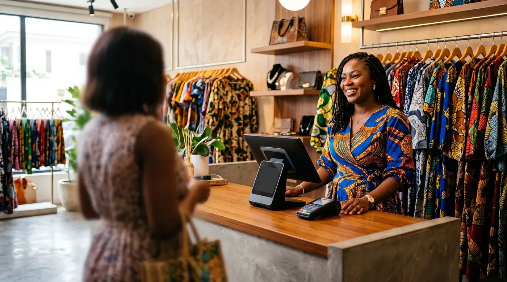

Logiciel de caisse et facture normalisée en Afrique de l'Ouest : le guide pour bien choisir
Vous tenez une boutique à Abidjan, un restaurant à Cocody ou une supérette à Dakar, et on vous parle partout de « facture normalisée », de « FNE » ou de « facturation électronique » ? Vous n'êtes pas seul à vous demander quel logiciel de caisse choisir pour être en règle sans exploser votre budget. Ce guide fait le point, simplement : ce qu'exigent la DGI et la DGID, à qui ça s'applique, les fonctions à réclamer et combien ça coûte vraiment.

La facture normalisée, c'est quoi exactement ?
La « facture normalisée » est une facture dont le format et la sécurité sont imposés par l'administration fiscale, afin de lutter contre la fraude et de fiabiliser les recettes de l'État. Pendant des années, en Côte d'Ivoire, elle prenait la forme d'une facture papier munie d'une vignette (le fameux « sticker »). La grande nouveauté de la région, c'est le passage au format électronique.
Côte d'Ivoire : la Facture Normalisée Électronique (FNE)
La DGI ivoirienne a déployé la Facture Normalisée Électronique (FNE), qui dématérialise l'ancienne facture normalisée papier. Concrètement, chaque facture est certifiée par le système de la DGI au moyen de trois éléments : un numéro de facture au format normatif, un visuel FNE et un QR code de certification. Cette signature électronique joue le rôle de « sticker électronique ». Le portail officiel de référence est fne.dgi.gouv.ci.
Le déploiement s'est fait par étapes en 2025, régime par régime, avec une période de tolérance autorisant un temps la coexistence du papier et de l'électronique. D'après les communications de la DGI, cette tolérance s'est achevée fin 2025, faisant de la FNE le standard attendu. Les échéances et exceptions exactes vous concernant doivent être vérifiées auprès de la DGI, car elles dépendent de votre régime d'imposition.
Sénégal : la facturation électronique normalisée
Au Sénégal, la DGID s'est inspirée notamment du modèle béninois pour bâtir son dispositif. La loi de finances 2025 (loi n°2025-02 du 28 décembre 2024) introduit l'obligation de facturation électronique pour les contribuables assujettis à la TVA. Des sanctions financières sont prévues en cas de manquement (une amende proportionnelle à la TVA concernée, plafonnée par facture). Les modalités techniques détaillées, formats acceptés, plateformes habilitées, règles d'archivage, sont précisées par voie réglementaire ; suivez les annonces officielles de la DGID pour connaître le calendrier applicable à votre entreprise.
Une dynamique régionale
Côte d'Ivoire, Sénégal, Bénin… la facture électronique normalisée gagne l'espace UEMOA, sur un socle commun de règles comptables OHADA. Pour un commerçant, le message est simple : la facture « cahier » ou le ticket non sécurisé appartiennent au passé. Mieux vaut s'équiper dès maintenant d'un logiciel de caisse capable de produire des factures conformes et de s'adapter aux exigences de certification, plutôt que de tout changer dans l'urgence.
À qui s'applique l'obligation ?
La logique générale des deux pays est l'élargissement progressif : on commence par les grandes structures, puis on descend vers les plus petites.
- Côte d'Ivoire (FNE) : le dispositif vise l'ensemble des entreprises en activité, du régime normal (RNI) au régime simplifié (RSI), aux microentreprises (RME) et aux entreprenants, sauf exceptions prévues par la loi. Le déploiement a été échelonné par régime en 2025.
- Sénégal : l'obligation cible en priorité les assujettis à la TVA (souvent les entreprises au régime du réel, au-dessus d'un certain seuil de chiffre d'affaires). Les contours précis et le seuil applicable sont à confirmer auprès de la DGID.
Le bon réflexe : ne devinez pas votre échéance. Rapprochez-vous de votre centre des impôts ou de votre expert-comptable pour savoir à quelle date vous devez basculer, et avec quels justificatifs.
Les fonctionnalités à exiger de votre logiciel de caisse
Au-delà de la conformité, une bonne caisse doit coller à la réalité du terrain ouest-africain : connexion parfois capricieuse, paiements variés, restauration animée. Voici ce que nous vous conseillons d'exiger.
- Aptitude à la facture normalisée. Le logiciel doit pouvoir produire une facture conforme et, pour la FNE ivoirienne, s'interconnecter au système de certification de la DGI (directement ou via un intermédiaire habilité). Demandez-le noir sur blanc à l'éditeur.
- Mode hors ligne avec synchronisation. Indispensable quand le réseau saute : vous continuez à encaisser, et les données remontent au retour de la connexion.
- Gestion des paiements multiples. Espèces, carte, et surtout mobile money (Orange Money, Wave, MTN, Moov…) : la caisse doit enregistrer proprement chaque mode de règlement.
- Multi-devises. Utile pour les zones frontalières, le tourisme ou les achats en gros.
- Outils restauration. Plan de salle, gestion des tables, envoi en cuisine, partage d'addition : un must pour les maquis, bars et restaurants.
- Suivi des stocks et rapports. Pour piloter les marges et préparer sereinement vos déclarations.
- Simplicité et matériel libre. Une prise en main rapide et la possibilité d'utiliser une simple tablette Android évitent d'immobiliser de la trésorerie dans du matériel propriétaire.
Comment choisir : les solutions à connaître
Le marché local s'est étoffé : éditeurs panafricains, solutions 100 % locales et caisses cloud internationales cohabitent. Voici notre lecture, du plus recommandé au plus spécifique.
digabloPos
digabloPos est une caisse cloud moderne qui coche les cases les plus importantes pour un commerçant ouest-africain. Le plan de base est gratuit à vie (sans date limite, sans carte bancaire), prêt en environ 5 minutes. Surtout, il inclut le mode hors ligne avec synchronisation automatique, précieux là où la connexion est instable, un plan de salle pour la restauration, la gestion multi-devises et des modules à la carte qu'on n'active qu'en cas de besoin. Autre point fort : aucune commission imposée sur vos paiements, vous restez libre de votre solution d'encaissement (mobile money compris).
👍 Points forts
- Plan de base gratuit à vie, sans engagement
- Fonctionne même sans Internet, avec synchro auto
- Pensé pour la restauration (tables, cuisine)
- Multi-devises et modules à la carte
- Pas de commission imposée sur les paiements
- Gestion des ardoises / crédit client
- Prête pour la facturation électronique
👎 À vérifier
- Confirmez auprès de l'éditeur et de la DGI la prise en charge de la certification FNE / facture normalisée pour votre cas
- Marque récente face aux acteurs historiques
- Certains modules avancés sont payants
Solutions 100 % locales (ex. Sen-Caisse, iPOS)
Au Sénégal, des éditeurs comme Sen-Caisse ou iPOS proposent des logiciels pensés pour le marché local (ventes, achats, dépenses, stock, factures). Avantage : proximité et support sur place. À vérifier : la prise en charge concrète de la facturation électronique de la DGID et les conditions tarifaires (matériel, abonnement).
👍 Points forts
- Connaissance du terrain local
- Support de proximité
👎 Limites
- Couverture conformité à confirmer
- Mode hors ligne variable selon l'offre
ERP intégrés (ex. solutions sur base Odoo)
Des intégrateurs ivoiriens proposent des caisses adossées à un ERP complet (caisse, inventaire, comptabilité, export conforme aux attentes de la DGI). Puissant pour une structure organisée ou un réseau de points de vente, mais souvent plus lourd à déployer et plus coûteux qu'une caisse cloud légère pour un petit commerce.
👍 Points forts
- Tout-en-un (caisse + gestion + compta)
- Adapté aux réseaux multi-magasins
👎 Limites
- Mise en place plus longue
- Budget plus élevé
Caisses cloud internationales (ex. Loyverse)
Simples et populaires, ces applications gratuites pour la caisse de base dépannent bien. Le bémol pour l'Afrique de l'Ouest : elles ne sont pas conçues pour la facture normalisée locale, et plusieurs fonctions courantes passent par des modules payants. À réserver à un usage d'appoint, ou à coupler avec une solution de conformité.
👍 Points forts
- Gratuit pour la caisse de base
- Interface claire
👎 Limites
- Pas pensé pour la FNE / DGID
- Modules additionnels payants
Envie de tester sans rien dépenser ?
Le plan de base de notre n°1 est gratuit à vie, prêt en 5 minutes, sans carte bancaire, idéal pour démarrer du bon pied.
Essayer digabloPos gratuitementTableau récapitulatif
| Critère | digabloPos | Solutions locales | ERP intégré | Cloud international |
|---|---|---|---|---|
| Plan gratuit à vie | Oui | Variable | Non | App oui |
| Mode hors ligne | Oui | Variable | Variable | Partiel |
| Plan de salle / restauration | Oui | Variable | Oui | Limité |
| Multi-devises | Oui | Variable | Oui | Partiel |
| Commission imposée sur paiements | Non | Variable | Variable | Variable |
| Conformité facture normalisée | À confirmer* | À confirmer* | À confirmer* | Non prévue |
| Prise en main | ~5 min | Moyenne | Longue | Rapide |
*La conformité à la facture normalisée (FNE en Côte d'Ivoire, facturation électronique au Sénégal) dépend de l'intégration de chaque éditeur avec les systèmes officiels et de votre régime d'imposition. À confirmer impérativement auprès de l'éditeur et de la DGI / DGID avant tout choix. Fonctionnalités indicatives à jour de juin 2026 ; vérifiez toujours sur les sites officiels.
Combien ça coûte vraiment (paiements compris)
Le piège classique : regarder le prix affiché du logiciel et oublier le reste. Pour comparer honnêtement, additionnez sur 12 mois :
- Le logiciel. De 0 FCFA (plan gratuit d'une caisse cloud comme digabloPos) à un abonnement mensuel pour les offres plus complètes. Au Sénégal, des estimations évoquent des coûts de mise en conformité et d'abonnement variables selon l'outil et la complexité ; faites chiffrer votre cas.
- Le matériel. Une tablette Android suffit souvent avec une caisse cloud. Les packs « tout-en-un » (écran tactile, tiroir-caisse, imprimante thermique) vendus localement représentent un investissement ponctuel à prévoir si vous en voulez un.
- Les commissions de paiement. C'est le poste le plus sous-estimé. Carte bancaire et mobile money peuvent comporter des frais prélevés par l'opérateur ou le prestataire, totalement indépendants du logiciel de caisse. Une caisse qui ne vous impose pas son système d'encaissement vous laisse négocier les meilleurs taux.
- Le coût de certification. En Côte d'Ivoire, la certification des factures via le dispositif FNE peut s'accompagner de frais unitaires modiques selon la nature et le montant de la transaction. Les barèmes exacts sont fixés par la DGI et doivent être vérifiés sur fne.dgi.gouv.ci, car ils peuvent évoluer.
Le bon calcul n'est pas « combien coûte la caisse ? » mais « combien me coûte chaque vente, tout compris ? ». C'est là qu'une caisse gratuite et sans commission imposée fait la différence sur l'année.
Questions fréquentes
La facture normalisée est-elle obligatoire pour tous les commerçants en Côte d'Ivoire ?
Le dispositif de Facture Normalisée Électronique (FNE) de la DGI vise progressivement l'ensemble des entreprises en activité, quel que soit leur régime (RNI, RSI, microentreprises, entreprenant), sauf exceptions prévues par la loi. Le calendrier a été échelonné en 2025. Vérifiez votre situation et vos échéances exactes sur le portail officiel fne.dgi.gouv.ci ou auprès de votre centre des impôts.
Un logiciel de caisse classique suffit-il pour émettre une facture normalisée ?
Pas toujours. Pour la FNE en Côte d'Ivoire, la facture doit être certifiée par le système de la DGI (numéro normatif, visuel FNE et QR code de certification). Le logiciel doit donc pouvoir se connecter au dispositif officiel ou passer par un intermédiaire habilité. Demandez à l'éditeur s'il gère cette intégration et confirmez l'homologation auprès de la DGI.
Que prévoit le Sénégal en matière de facturation électronique ?
La loi de finances 2025 (loi n°2025-02 du 28 décembre 2024) introduit l'obligation de facturation électronique pour les assujettis à la TVA. Les modalités techniques précises (formats, plateformes habilitées, archivage) sont précisées par voie réglementaire. Des sanctions financières sont prévues en cas de manquement. Suivez les communications officielles de la DGID.
Que se passe-t-il si Internet tombe alors que je dois encaisser ?
Avec une caisse disposant d'un vrai mode hors ligne, vous continuez à enregistrer les ventes et les données se synchronisent au retour du réseau. C'est essentiel là où la connexion est instable. La certification d'une facture peut toutefois nécessiter une connexion : privilégiez une solution capable de mettre la transmission en file d'attente.
Le mobile money entraîne-t-il des commissions à intégrer dans mes coûts ?
Oui. Les paiements par mobile money ou par carte peuvent comporter des frais facturés par l'opérateur ou le prestataire de paiement, indépendamment du logiciel de caisse. Distinguez bien le prix du logiciel des commissions de paiement, et privilégiez une caisse qui ne vous impose pas son propre système d'encaissement.
Prêt à vous équiper sereinement ?
Installez une caisse cloud gratuite en 5 minutes, encaissez sans commission imposée et préparez votre passage à la facture normalisée.
Créer ma caisse gratuite, 5 min